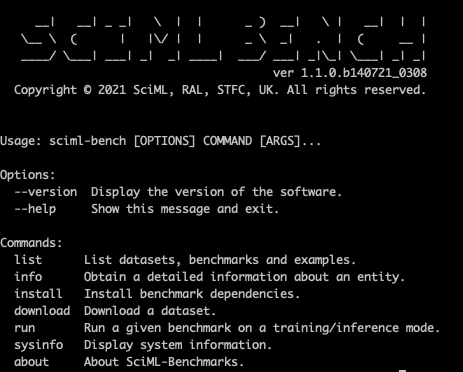
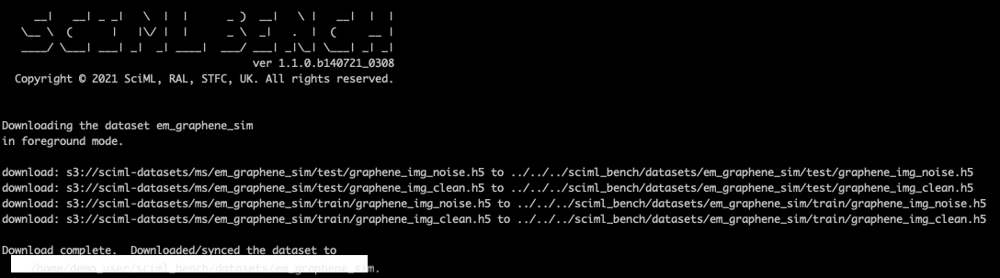
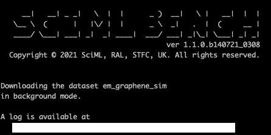

Using & Contributing to SciML-Bench: A Tutorial
This tutorial is not a replacement for the documentation. Please consult the Installation documentation for more details. In addition to this, the general usage is outlined here. This tutorial is intended to demonstrate these with examples packaged with the framework. We recommend following all of the following examples in order, until you feel comfortable of using the framework or contributing to the benchmarks.
Using SciML-Bench through Command Line Interface (CLI)
Environment
We strongly advice you to create a sandboxed environment before using the benchmark suite, ideally in a conda environment or pyenv. We also recommend Python 3.9. Let's assume that the name of the sandboxed environment is "bench", to mark benchmarking. To start with
conda create --name bench python=3.9 -y
This should create the environment 'bench' with Python 3.9. Switch to this environment using
conda activate bench
With this, you should see the active environment as 'bench'. If not sure, you can verify this using the command
conda info
or
echo $CONDA_PREFIX
Installing the Benchmark
Once the environment is active, change the active directory where the sources are (where you should see the README.md file).
Issue the following command to install the SciML-Bench.
pip install --use-feature=in-tree-build .
This should install the benchmark framework without any issues.
Verifying the installation
There are several ways to verify the installation, but an easier one is to use the about command as follows:
sciml-bench about
This should produce an output similar to the one below.

Another option is to use the --version option as follows:
sciml-bench --version
producing the following looking output:

Another method to verify the installation is to use the --help option using the command sciml-bench --help, which produces the following looking output:

Here, across all these commands, the exact reported version of the framework may vary, and can safely be ignored.
Listing and verifying entities
Successful installation of the framework does not guarantee successful installation of the entities, such as benchmarks and datasets. As the exact benchmarks that each user wanting to evaluate or run may vary greatly, the framework does not install these. Available entities can be listed using the list command. In other words, running the sciml-bench list should produce a following (or similar) output.

It is worth noting that benchmarks and datasets are split into production level benchmarks/datasets and example benchmarks/datasets. The latter is used to provide very simple examples to demonstrate the applicability of the framework. Further options for any command can be found by supplying the --help option to any command. For example, sciml-bench list --help or sciml-bench download --help and alike.
We can list only the datasets using the command
sciml-bench list datasets
which produces the following output:

Similarly, benchmarks and examples can be listed using the commands sciml-bench list benchmarks and sciml-bench list examples, respectively.
The installed benchmarks and downloaded datasets can be verified using the --verify option for the list command, so that the command looks like
sciml-bench list --verify
This should produce an output similar to the one below.

It is worth noting several states of the datasets and benchmarks, such as 'Downloaded', 'Not downloaded', 'Runnable' and 'Not runnable'. The status of a dataset can either be 'Downloaded', 'Not downloaded', indicating the local availability of the dataset. Similarly, status of a benchmark can either be 'Runnable' or 'Not runnable'. Benchmarks are not runnable until they have been explicitly installed (see below). We will use the em_denoise benchmark and the associated dataset em_graphene_sim to demonstrate downloading and installation operations, but can be extended to other or all datasets. We recommend using the --verify option every time a benchmark is installed.
Listing Dependencies
As highlighted in the main documentation, benchmarks rely on one or more datasets and other python packages. These dependencies can be listed using the --deps option to the list command. For example,
sciml-bench list --deps
should produce an output similar to the following:

You must be able to observe both dataset and package dependencies of each of the benchmarks.
Downloading Datasets
Datasets have to be locally available before running any benchmark, and thus must be downloaded beforehand using the download command.
Let's assume that we would like run the em_denoise benchmark. However, this requires the relevant datasets to be in place, namely, the em_graphene_sim dataset. Any dataset can be downloaded using the download command, in the format of sciml-bench download [OPTIONS] DATASET_NAME, where you are expected to specify the dataset names. This can be any of the following:
- A single dataset (available via
sciml-bench list datasetscommand). An example is:sciml-bench download em_graphene_sim. - More than one dataset, as a comma-separated list. An example is: `sciml-bench download em_graphene_sim,dms_sim
- Using the
allkeyword, which will download all datasets. An example is:sciml-bench download all.
Although benchmarks are listed as part of the list command, they are not downloadable entities. You codebase contains all benchmarks and they do not have to be downloaded separately.
Let us assume that we would like to download the em_graphene_sim dataset. Issue the following command at the command prompt.
sciml-bench download em_graphene_sim
This will immediately begin the download process, resulting in an output like the following:

The downloaded files are kept in the default dataset folder, which is usually {HOME}/sciml_bench/datasets. This location can be modified in two different ways:
-
Method 1: Specify the location through the
--dataset_diroption. If omitted, the location from the configuration file will be used. -
Method 2: Modify the Configuration file. Please see the Configuration File to see how this can be achieved.
In the examples that follow this, we will be omitting this option of --download_dir, but if desired, you can specify this. For example
sciml-bench download em_graphene_sim --download_dir /tmp/emg
or similar.
In the example above, as can be observed, the download command downloaded the dataset in foreground (i.e. interactive) mode. However, this is not possible for all datasets, particularly, where datasets are very large. In those instances, the download command can be launched with the --mode option, where it is possible to force the framework to download the dataset in background mode. The --mode option can take either foreground (default when not using the --mode option) or background as possible values. The --mode background starts downloading the dataset in background mode and immediately releasing the terminal window. For example, the command
sciml-bench download --mode background em_graphene_sim
produces the following output:

Then the download log can be inspected to see whether the download is complete. There will not be any alerts to the window. Full details of the download command can be found via the --help flag. i.e.
sciml-bench download --help
Then running the sciml-bench list --verify command is useful to know the status of the datasets. However, the --verify option does not verify the integrity of individual files. This may be supported in future versions.
Finding More about Datasets
In addition to the list command the info command can be used for obtaining short description around each dataset. The documentation on datasets provide a full coverage around each dataset. To use the info command, issue the following command:
sciml-bench info <DATASET_NAME>
where
sciml-bench info em_graphene_sim
This displays a limited information around the em_graphene_sim benchmark. The example output for the above command will look like the following:

Installing Benchmarks
As highlighted before, the list --verify or list --deps commands can provide the status of the benchmarks (as runnable or not runnable). Each benchmark comes with its own set of dependencies (python packages), and these are not installed by default. For this reason, each benchmark must be installed separately, which will force relevant dependencies to be installed. An example is:
sciml-bench install em_denoise
This command will automatically read and install relevant dependencies (as per the configuration file) for the em_denoise benchmark. A sample output will look like the following:

Again, as highlighted before, the version, and the exact location of the logs are not important here. The log file contains very detailed installation messages. Instead of a single benchmark, multiple benchmarks can be specified, such as
sciml-bench install all
or
sciml-bench install em_denoise,dms_scatter
Finding More about Benchmarks
Benchmarks are runnable entities, with dependencies on a number of packages, datasets and contains many tunable parameters. The SciML-Bench framework provides a number of commands to obtain various pieces of information about a given benchmark. These, however, do not replace the documentation. Therefore, we recommend using these in conjunction with the documentation.
The info command used to find information about datasets can also be used for obtaining a short description around each benchmark. The documentation on benchmarks provide a full coverage of various options for each and every benchmark. To use the info command,
sciml-bench info em_denoise
This displays a limited information around the em_denoise benchmark. The example output for the above command will look like the following:

Running Benchmarks
Once the benchmarks are installed, please issue the list command with --verify option, which will indicate whether each benchmark is runnable or not. There can be several reasons for a benchmark to be marked as not runnable, including
- The benchmark has not been installed (i.e. missing dependencies),
- The relevant datasets have not been downloaded,
- The benchmark fails to launch (due to conflicting dependencies or invalid command or similar). This situation is very rare, and we encourage you to contact us.
Let's assume that the command sciml-bench list --verify lists the em_denoise benchmark as runnable. In other words, the dataset em_graphene_sim must also have been downloaded. This can be seen in the list, as in the figure below.

The Runnable (Training & Inference) indicates that the benchmark can be run either in training mode or in inference mode.
Running Benchmarks on Training Mode
The benchmark can be run in a number of different ways. Simply issuing the run command without any extra arguments results in default arguments being used, namely,
- The given benchmark will run on training mode using default parameters (such as learning rate, batch size, etc.)
- Outputs will be stored in
~/sciml_bench/outputs/<benchmark_name>/<yyyymmdd>/trainingor../inferencedirectories. These include benchmark runs, logs, saves models and training or inference history. - Will use the datasets from the default dataset folder, which is, `~/sciml_bench/datasets/
To run the em_denoise benchmark with default settings,
sciml-bench run em_denoise
An example output of a run will look like the following:

Once you are comfortable with the default runs, you can begin to alter the defaults. Since the default running mode is training, the following two commands are equivalent:
sciml-bench run em_denoise
and
sciml-bench run em_denoise --mode training em_denoise
For example, if you desire, you can specify an output directory using the output_dir option to the run command, as follows:
sciml-bench run --mode training --output_dir /tmp/emgx-out em_denoise
We can also specify a custom dataset folder, for instance, if you have downloaded that to a different directory using the --dataset_dir option. The following two commands are identical:
sciml-bench run --mode training --dataset_dir ~/sciml_bench/datasets/em_graphene_sim --output_dir /tmp/emgx-out em_denoise
and
sciml-bench run --output_dir /tmp/emgx-out em_denoise
Finally, you can specify benchmark-specific arguments using the -b (or --benchmark_specific) flag. For instance, to set the number of epochs to 10 (instead of default 2), and the learning rate to 0.001 (instead of default 0.01) for the em_denoise benchmark, the following command can be used
sciml-bench run -b batch_size 4 -b lr 0.001 em_denoise
Please explore the additional options using the --help option as follows:
sciml-bench run --help
Running Benchmarks on Inference Mode
To run a benchmark on inference mode, you need to:
- have access to the model files (including the architecture and weights), and
- have some datasets on which you would like to run the inference on.
Each benchmark varies how they store the model files. For the case of em_denoise benchmark, this is stored as a single HDF file (with an extension of .h5) inside the outputs directory (which you can move this around). You cannot run a benchmark in inference mode without access to this model file. Similarly, each benchmark varies how they expect the datasets for inference, and this varies across benchmarks. Please consult the documentation to know the expected data formats of benchmarks for inference. The suite includes some sample inference datasets. The em_denoise benchmark expects the inference datasets in single channel PNG format with the resolution of $256\times 256$.
For this example, let's assume:
- That you have access to the trained the model, and full path to the trained model is:
~/sciml_bench/outputs/em_denoise/20210720/training/em_denoise_model.h5. - Inference datasets (an array of PNG images) are stored at /tmp/emd/inference
With this, we can run the benchmark in inference mode as follows.
sciml-bench run --mode inference \
--model ~/sciml_bench/outputs/em_denoise/20210720/training/em_denoise_model.h5 \
--dataset_dir /tmp/emd/inference \
em_denoise